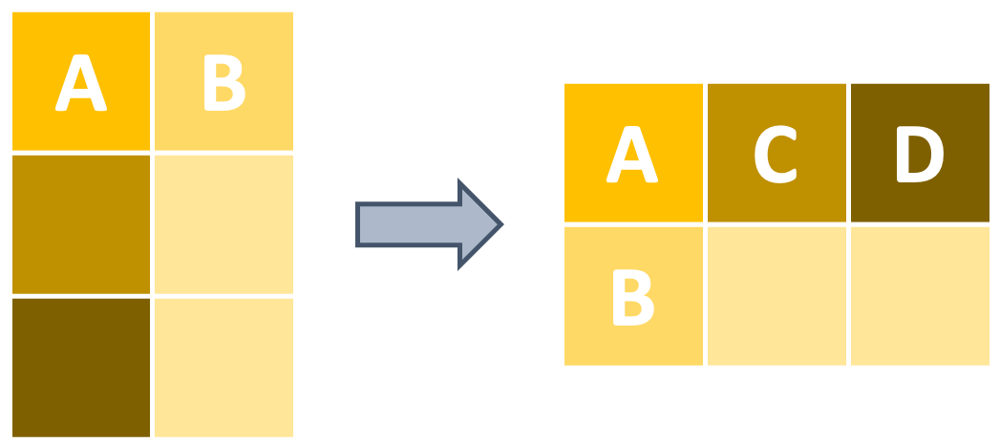
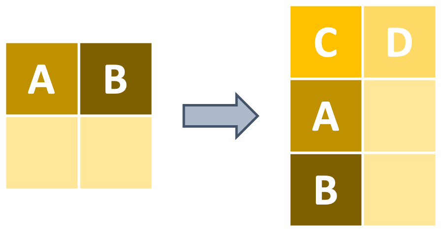

Usetidyr’s pivot_wider and pivot_longer functions to reshape data
Defining “Shape”
Before talking about how to reshape your data between wide and long format, let’s talk about what “shape” means in reference to data. Fundamentally, “long” data are data with more rows than columns while “wide” data tend to have more columns than rows.
For example, in community ecology a “wide” dataframe could have each row being a site that researchers visited while each column could be a different species where the value in the row is the number of individuals of that species at that site. On the other hand, the penguins dataframe we’ve been working with so far is in “long” format because it has one row per penguin and multiple penguins are stacked up.
Both wide and long format data can be useful in certain contexts and it is sometimes most intuitive to reshape data from one form to the other (and sometimes back again to the original form!).
Reshaping Data
The tidyr package contains the intuitively-named pivot_wider and pivot_longer for doing exactly this reshaping.
To help demonstrate these two functions, let’s begin by summarizing our dataframe to make changing the shape of the dataframe more visible than it would be with the full dataframe. For example, let’s calculate the average bill length of each penguin species on each island.
# Begin by naming our new data and the data they come frompenguins_simp <- penguins %>%# Now group by species and island dplyr::group_by(species, island) %>%# Calculate average bill length dplyr::summarize(avg_bill_length_mm =mean(bill_length_mm, na.rm =TRUE)) %>%# And don't forget to ungroup! dplyr::ungroup()# And this is what we're left with:penguins_simp
Great! We can use this smaller data object to demonstrate reshaping more clearly. Let’s begin with an example for pivot_wider.
pivot_wider Example: Reshaping to Wide Format
Example
pivot_wider takes long format data and reshapes it into wide format.

Let’s say that we want to take that data object and reshape it into wide format so that each island is a column and each species of penguin is a row. The contents of each cell then are going to be the average bill length values that we just calculated.
# Begin by naming the objectspenguins_wide <- penguins_simp %>%# And now we can pivot wider with `pivot_wider`! tidyr::pivot_wider(names_from = island,values_from = avg_bill_length_mm )# Take a look!penguins_wide
# A tibble: 3 × 4
species Biscoe Dream Torgersen
<fct> <dbl> <dbl> <dbl>
1 Adelie 39.0 38.5 39.0
2 Chinstrap NA 48.8 NA
3 Gentoo 47.5 NA NA
Great! We now have each island as a column, each row is a penguin species, and the bill length measurement we took is included in each cell. Note that in this specific case this makes the number somewhat ambiguous so we might want to use dplyr’s select or the more specific rename to change the island names to be clearer that those values are bill lengths in milimeters.
pivot_longer Example: Reshaping to Long Format
Example
Now that we have a small wide format data object, we can feed it to pivot_longer and reshape our data into long format! pivot_longer has very similar syntax except that with pivot_longer you need to tell the function which columns should be reshaped.
pivot_wider on the other hand knows which columns to move around because you manually specify them in the “names_from” and “values_from” arguments.

# Begin with our wide datapenguins_wide %>%# And reshape back into long formatpivot_longer(cols =-species,names_to ="island_name",values_to ="mean_bill_length_mm" )
# A tibble: 9 × 3
species island_name mean_bill_length_mm
<fct> <chr> <dbl>
1 Adelie Biscoe 39.0
2 Adelie Dream 38.5
3 Adelie Torgersen 39.0
4 Chinstrap Biscoe NA
5 Chinstrap Dream 48.8
6 Chinstrap Torgersen NA
7 Gentoo Biscoe 47.5
8 Gentoo Dream NA
9 Gentoo Torgersen NA
Two quick things to note here:
First, pivot_longer included the cells that were NA in the wide version of the data.
This default behavior is really nice so that you don’t lose any cells implicitly (though you can always filter them out if you don’t want them!).
Second, you’ll note that in the “cols” argument I only told pivot_longer to not include the “species” column using the same notation you could use for the select function in the dplyr package.
This is very handy because it lets us write really concise values in the “cols” argument and the default becomes “everything except what was specified”.
Note that we could have also said cols = Biscoe, Dream, Torgersen and achieved the same reshaping of the data.
Challenge: Reshaping
Your Turn!
The code below creates a data object that includes the flipper length of all Adelie penguins; what code would you add to reshape the data so that each sex is a column with flipper lengths in the cells?
penguins %>%# Keep only Adelie penguins of known sex dplyr::filter(species =="Adelie"&!is.na(sex)) %>%# Calculate the average flipper length by island and sex dplyr::group_by(island, sex) %>% dplyr::summarize(avg_flipper_length_mm =mean(flipper_length_mm, na.rm =TRUE)) %>%# Ungroup (good practice to include this step!) dplyr::ungroup()
# A tibble: 6 × 3
island sex avg_flipper_length_mm
<fct> <fct> <dbl>
1 Biscoe female 187.
2 Biscoe male 190.
3 Dream female 188.
4 Dream male 192.
5 Torgersen female 188.
6 Torgersen male 195.